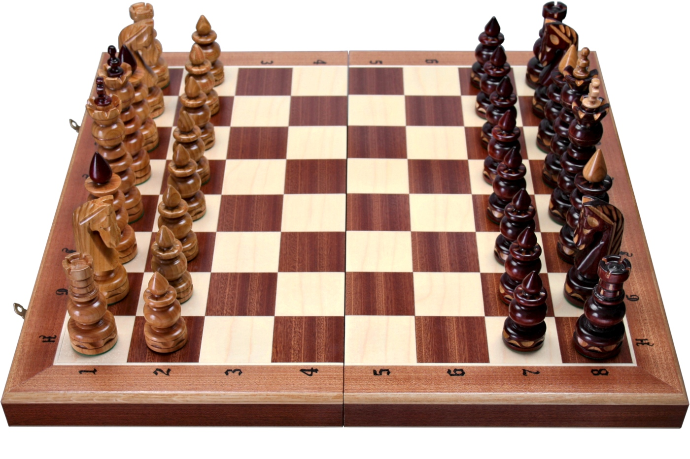

Główny opis gry
Szachy to strategiczna gra planszowa rozgrywana przez dwóch graczy, którzy na przemian wykonują ruchy swoimi figurami na szachownicy podzielonej na 64 pola. Celem gry jest zamatowanie króla przeciwnika, co oznacza, że król znajduje się w sytuacji, w której nie może uniknąć przechwycenia (szach). Każdy gracz ma 16 figur: jednego króla, jedną królową, dwóch wież, dwóch gońców, dwóch skoczków i ośmiu pionków. Figury poruszają się w określony sposób, a gracze muszą planować swoje ruchy, przewidywać ruchy przeciwnika i dążyć do osiągnięcia przewagi. Gra kończy się matą, remisem lub poddaniem się jednego z graczy.
